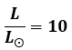
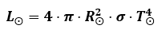
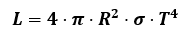
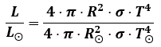
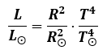
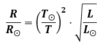

CÁLCULO DE DISTANCIAS ESTELARES MEDIANTE EL PARALAJE.
Es habitual que en lugar de trabajar con la luminosidad absoluta, se haga con la luminosidad relativa. Esta se consigue dividiendo la luminosidad absoluta de la estrella cuyo tamaño queremos averiguar entre la luminosidad absoluta de una estrella muy conocida. La que se usa es la del Sol, que, por razones obvias es la que mejor conocemos. Se obtiene así la denominada "Luminosidad relativa". La representaremos con el símbolo LΘ. Así, si una estrella tiene una luminosidad de digamos 10 LΘ, esto significa que su luminosidad absoluta es 10 veces mayor que la del Sol, o lo que es lo mismo, que el cociente:

Vamos a ver como se usa la luminosidad relativa. Si aplicamos la ecuación LRT al Sol y a la estrella, obtenemos que:
|
Nuestro Sol:  |
La estrella en estudio:  |
Si dividimos ambas ecuaciones:

Y ahora simplificamos:

Podemos despejar aquí el cociente de radios y hacer la raiz cuadrada. De esta forma tendríamos cuántas veces es mayor el radio de la estrella que el del Sol, y como nuestra estrella es de radio conocido...

En la ecuación obtenida podremos calcular el radio de la estrella expresado en radios solares, si conocemos la luminosidad relativa de la estrella con respecto al sol (que puede saberse fácilmente), pero ahora nos encontramos otro dato que debemos conocer: la temperatura superficial de una estrella. Continúa si quieres saber como se averigua.
Puedes ver un vídeo explicativo en el enlace: